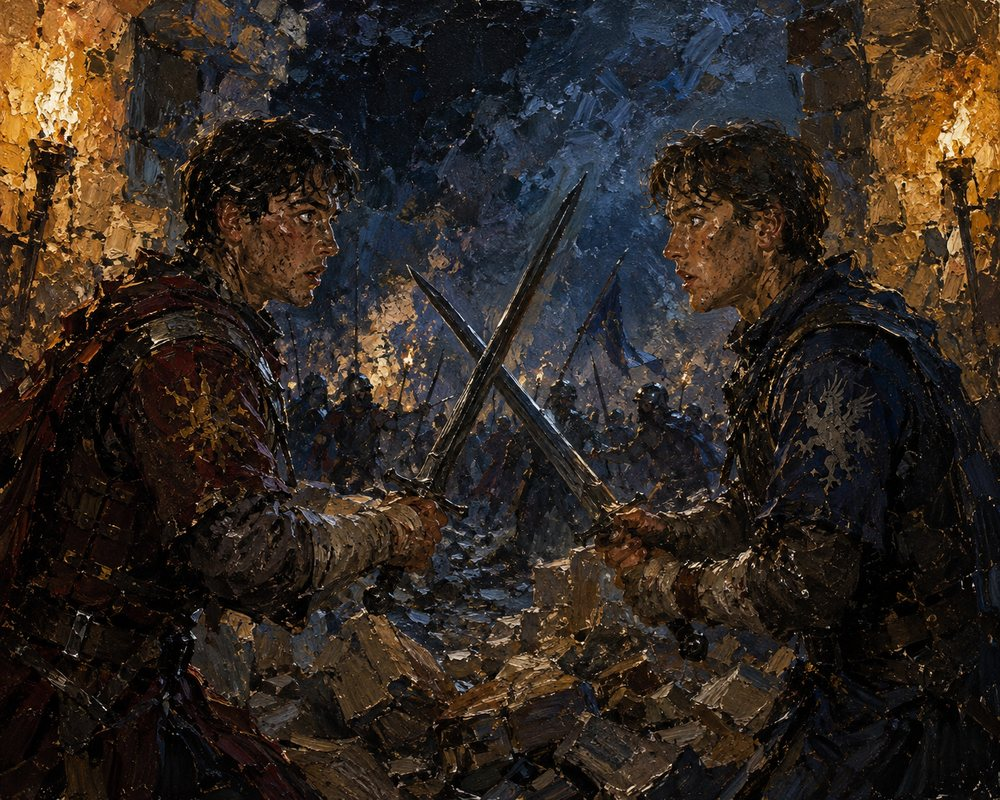

Record 10 of 13
The night the outer wall gives way, at the eastern breach: Gia of Bagrat's household guard and Beso of Vazha's loyalists recognize each other in the half-second before contact, two former patients of the same eleven fingers, and neither lowers his weapon
Two young soldiers face each other across crossed swords among rubble at night, one in red household-guard colors and one in blue with a heraldic beast, torchlit ranks behind them.